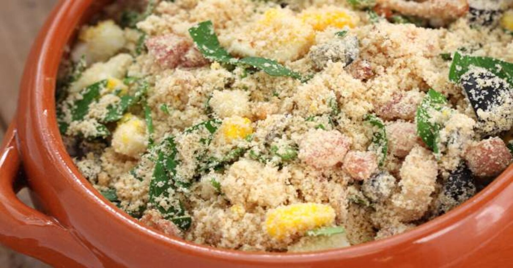
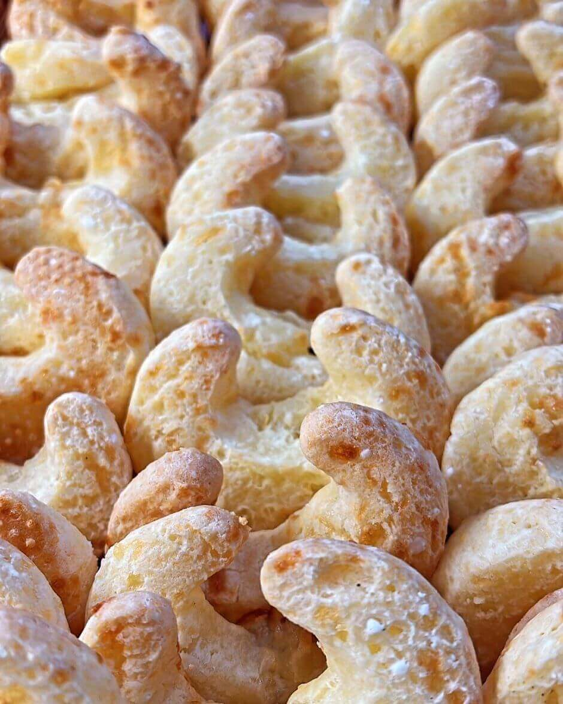

Arroz com pequi
Ingredientes
1/4 de xícara de chá de óleo ou banha de porco
2 dentes de alho espremidos
2 xícaras de chá de arroz
Sal a gosto
Salsinha, cebolinha picada a gosto
1/2 litro de pequi lavado
1 cebola grande picada
4 xícaras de chá de água quente
Pimenta de cheiro ou malagueta a gosto
Modo de preparo
1-Coloque o pequi no óleo ou gordura fria (se usar o fruto inteiro, não é preciso cortar, mas cuidado com o caroço).
2- Acrescente o alho e a cebola e deixe refogar em fogo baixo, mexendo sempre com uma colher de pau para não grudar na panela, e respingue um pouco de água quando for necessário.
3- Quando o pequi já estiver macio e a água secado, acrescente o arroz e deixe fritar um pouco.
4- Junte a água e o sal.
5- Quando o arroz estiver quase pronto, coloque a pimenta de cheiro ou malagueta a gosto.
6- Na hora de servir, polvilhe o arroz com salsa e cebolinha e um pouco de pimenta.
Site de retirada da receitaFarofa de Carne de Jacaré
Ingredientes
1 kg de carne de Jacaré
1 colher sopa de corante
1 xícara de de cebola picadinha
3 colheres sopa de milho verde (em conserva)
Tempero a gosto (sal, pimenta, alho, coentro, pimenta-do-reino)
3 colheres de sopa de óleo
2 colheres de sopa de pimentão picadinho
Farinha de mandioca
Modo de preparo
1-Em uma panela, fervente a carne do jacaré até que ela fique no ponto em que você enfia o garfo e ele não prenda (cerca de 50 minutos).
2-Quando estiver pronto, retire do fogo e deixe esfriar, lembre-se de apertar a carne para que não fique água por dentro.
3-Desfie a carne do jacaré e reserve.
4-Em uma panela, coloque o óleo a cebola o alho e o pimentão e doure, logo após coloque o corante e a carne do jacaré e depois a pimenta, o coentro e sal a gosto.
5-Mexa e coloque o milho.
6-Coloque aos poucos a farinha de mandioca até o ponto de farofa, desligue o fogo e sirva. Uma delícia com arroz branco!
Site de retirada da receitachipa
Ingredientes
2 ovos
1 colher de sopa bem cheia de margarina
Cerca de 2 xícaras de chá de polvilho doce
1 pitada de sal
1 pitada de fermento
2 xícaras de queijo meia cura
Modo de preparo
1-Misturar tudo e fazer bolinhas.
2-Colocar em forma untada.
3-Assar em forno pré-aquecido, em temperatura alta, ao colocar a forma passar para temperatura média por cerca de 15 minutos.
4-Retirar antes de dourar.
Site de retirada da receita